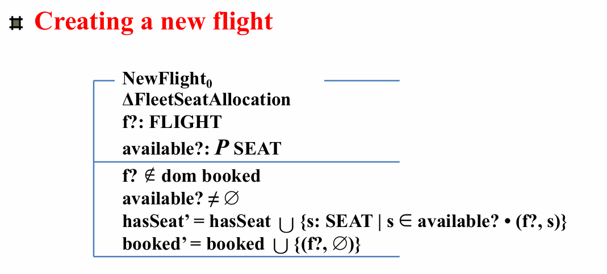

Sequences in Z
定义和表示
序列的必要性：
- 顺序（集合没有顺序）
- 一个元素多次出现（集合没有重复元素）
序列声明
- 声明序列 s，其中的元素的type为X：s： seq X
等效于声明函数：s： N +→ X ，且约束为： dom s = 1..#s
-
非空序列可以声明为：s： \(seq_1\) X
-
单射序列（ Injective sequence）声明：s： iseq X（s是不重复序列，即：其中 X 的元素在序列中不会多次出现）
表示法（ ⟨·⟩-representation）：
- 定义：序列是有穷的、可列举的、相同类型的元素的 collection
- 写法：\(\langle a_1, a_2, ..., a_n\rangle\)
- 空序列：\(\langle\rangle\)，n = 0
- 可重复、有顺序
函数表示法
序列是一种函数（函数表示法）：
- 正自然数到元素的函数
- \(f == \{1\mapsto a_1, 2\mapsto a_2, ..., n\mapsto a_n\}\)
- 给定集合 X，X 上的序列被定义为函数 f: 1 .. n \(\rightarrow\) X
- \(\langle\rangle = \emptyset\)
集合到序列：
- s: seq X
- seq X == {f: N +→ X | dom f = 1 .. #f}
- seq1 X == {f: seq X | #f > 0}
- iseq X == seq X \(\cap\) (N >+→ X)（单射，去掉多对一，即筛选掉重复出现的）
举例：
- customers ==
- customers 2 = Mike
- #customers = 4
The length of a sequences
序列 s 的长度就是函数 #s 的大小。
序列操作
head、last、tail、front
- head⟨a, b, c⟩ = a
- tail⟨a, b, c⟩ = ⟨b, c⟩
- last⟨a, b, c⟩ = c
- front⟨a, b, c⟩ = ⟨a, b⟩
- head 对应 last，取第一个和最后一个元素
- tail 对应 front，分别取 head 和 last 剩下元素构成的序列
Concatenation
串联
简单串联，例如：
-
record = ⟨Tom, Mike, Jone, Mary⟩
-
newRecord = ⟨Alice, Bob⟩
-
record ^ newRecord = ⟨Tom, Mike, Jone, Mary, Alice, Bob⟩
(这个串联符号我有点疑惑，不是 \(\cup\) ,也似乎不是 ^)
Reverse
逆置
- rev record = ⟨Mary, Jone, Mike, Tom⟩
- seq X 到 seq X 的全函数
Range
范围，序列的范围是序列中出现的一组值。例如：ran flight = {Geneva， Paris， London， NewYork}
- 给定一个序列 s=[s1,s2,…,\(s_n\)]，
Range(s)是一个集合(不含重复元素)，包含序列中所有不同的元素： Range(s)={s1,s2,…,\(s_n\)}
Squash
压缩
挤压通常，序列的限制不会产生序列，因为生成的域不会是从 1 开始的连续自然数。在这种情况下，运算符 squash 可用于通过“闭合间隙”将关系转换为序列。例如：squash （m..n \(\lhd\)S） 是从位置 m 到 S 的位置 n 的元素序列。
- \(s == \{1\mapsto x, 2\mapsto y, 3\mapsto z, 4\mapsto y, 5\mapsto y, 6\mapsto x\} = \langle x, y, z, y, y, x\rangle\)
- \(4 .. 6 \lhd s = \{4\mapsto y, 5\mapsto y, 6\mapsto x\}\)
- \(squash(4 .. 6 \lhd s) = \{1\mapsto y, 2\mapsto y, 3\mapsto x\} = \langle y, y, x\rangle\)
- 压缩把单射部分函数变成序列
- 先取一段，压缩到从 1 开始
Filtering
过滤
过滤过滤序列的作（用 '\(\upharpoonright\)' 表示）会生成一个新序列，其所有元素都是指定集合的元素。过滤作的效果类似于执行范围限制，然后“挤压”剩余的元素以填补省略元素留下的间隙。
- \(\langle a, b, c\rangle\upharpoonright\{a, c\} = \langle a, c\rangle\)
- \(\langle Tom, Mike, Jone, Jone, Mary\rangle\upharpoonright\{Tom, Jone\} = \langle Tom, Jone, Jone\rangle\)
- 过滤出指定元素，按照原来的次序和次数（移除指定元素之外的元素）
- \(s \upharpoonright V == squash(s \rhd V)\)
Restriction
限制
限制由于序列是一个函数，而函数是一个关系，因此可以使用关系运算符。关系限制运算符特别有用。例如：给定 S：seq X，则 1..n \(\lhd\)S 是 S 的前 n 个元素的序列。
* 举例：使用序列描述栈
Example: Using Sequences to Describe a Stack
* 举例：使用序列描述Pascal中的文件
Using Sequences to Describe Files in PASCAL
FILEMODE ::= inspection | generation
inspection（检查模式）：在此模式下，文件处于只读状态，不可修改。
generation（生成模式）：在此模式下，文件可被生成或写入新内容。
文本（系统状态）：
- 左、右都为字符序列（alreadyRead是左文本，stillToRead是右文本）
初始化：
- 空序列
成功：
- OKay
删除左文本：
- 约束：左文本不为空
- 操作：取 front、右不变
顶部错误：
- 左文本为空
删除左文本 == 删除左文本 且 成功 或 顶部错误
移动左文本：
- 约束：左文本不为空
- 操作：取 front、右在左侧连接上左文本的 last
移动左文本 == 移动左文本 且 成功 或 顶部错误
删除右文本：
- 约束：右文本不为空
- 操作：取 tail、左不变
底部错误：
- 右文本为空
删除右文本 == 删除右文本 且 成功 或 底部错误
移动右文本：
- 约束：右文本不为空
- 操作：左在右侧连接上右文本的 head、取 tail
移动右文本 == 移动右文本 且 成功 或 底部错误
插入左/右文本：
- 输入字符
- 连接字符的序列
- 另一侧不变


* 举例：使用序列描述飞机系统
Example1: Using Sequences to Describe a System (Aircraft)


* 举例：扩展飞机座位分配系统
Example2 : Extending Specification of Aircraft Seat Allocation System


